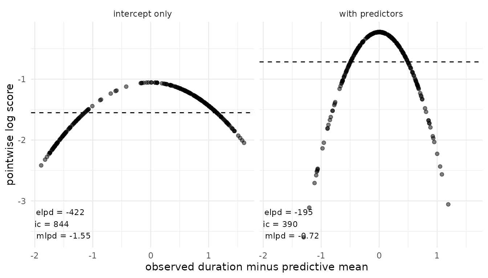
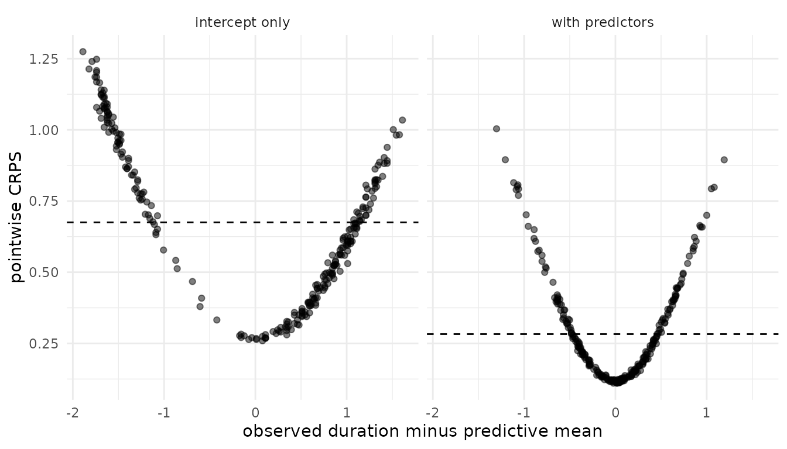
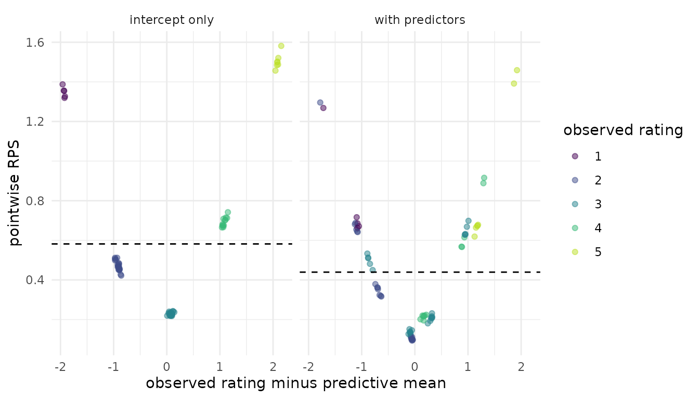
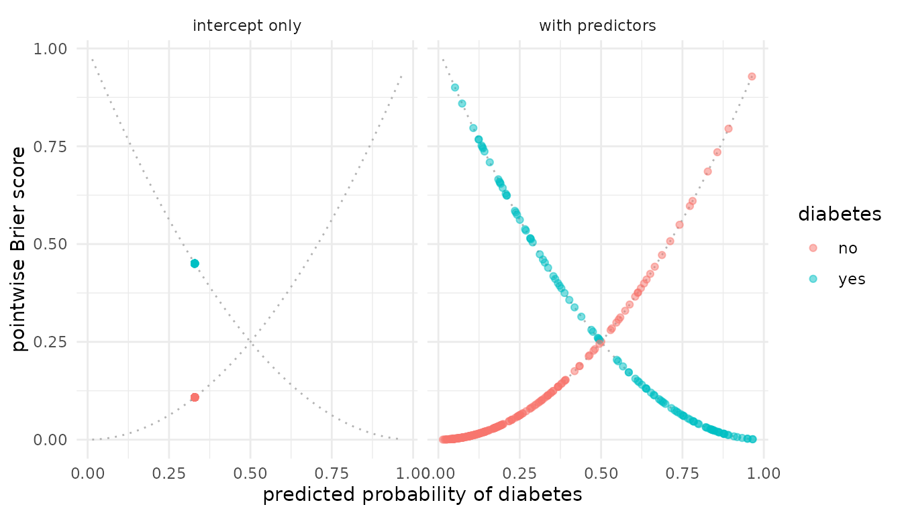
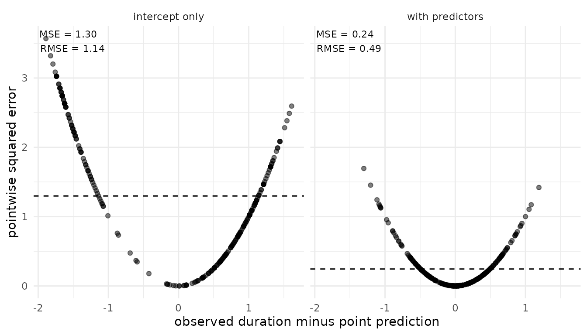
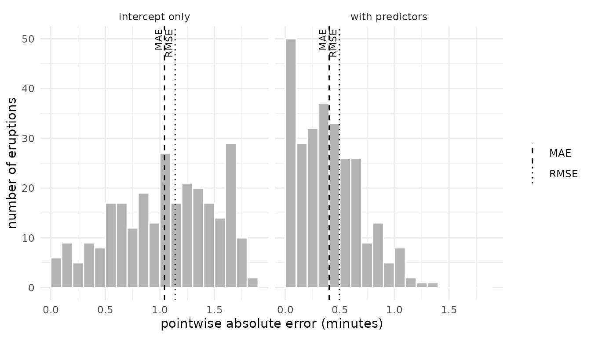
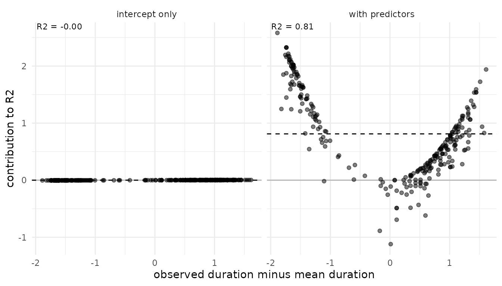
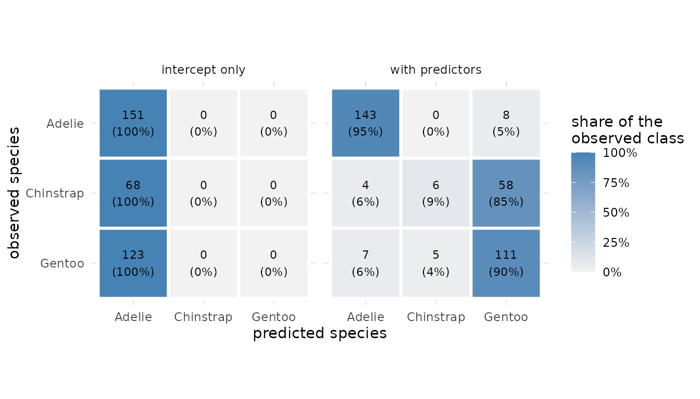

Predictive model performance: Overview of measures
Florence Bockting
2026-11-11
Source:vignettes/articles-online-only/overview-measures.Rmd
overview-measures.RmdIntroduction
A predictive measure summarizes how well a model predicts
data. loo provides twelve built-in measures and the
possibility to create a custom measure. Each built-in measure has its
own measure_*() function.
This vignette introduces each built-in measure. For each measure it gives:
- the motivation,
- when to use it,
- the key formula,
- the standard error,
- the implementation in loo, and
- a plot and its interpretation, comparing a model with predictors to an intercept-only model.
This vignette states only the key formulas. The full definitions, the estimators, and the standard errors are in our supplement (Vehtari et al., 2026).
This vignette hides the code for the plots. The full source code is
in the loo
GitHub repository.
What this vignette does not cover
-
Predictive schemes
- Examples in this vignette use in-sample predictions.
- All measures can be used with leave-one-out, K-fold, or test-data
predictions; see Predictive model
performance: Predictive schemes with
pred_measure().
-
Model comparison
- Using the
model_compare()function; see Model comparison: Explanation ofmodel_compare(). - A tutorial on using model comparison within the Bayesian workflow;
see Model comparison: Case Study with
model_compare()
- Using the
Overview of built-in measures
| Keyword | Measure | Family | Input | Outcome | Natural scale | Aggregation |
|---|---|---|---|---|---|---|
elpd |
expected log pointwise predictive density | log score | ylp |
any | utility | sum |
mlpd |
mean log predictive density | log score | ylp |
any | utility | mean |
ic |
information criterion, \(-2\,\text{elpd}\) | log score | ylp |
any | loss | sum |
rps |
(continuous) ranked probability score | ranked probability score | ypred |
continuous or ordered | loss | mean |
srps |
scaled (continuous) ranked probability score | ranked probability score | ypred |
continuous or ordered | utility | mean |
brier |
Brier score | Brier score | ypred |
binary | loss | mean |
mae |
mean absolute error | point error | mupred |
continuous | loss | mean |
mse |
mean squared error | point error | mupred |
continuous | loss | mean |
rmse |
root mean squared error | point error | mupred |
continuous | loss | function of means |
r2 |
predictive \(R^2\) | predictive \(R^2\) | mupred |
continuous | utility | function of means |
acc |
classification accuracy | classification accuracy | mupred |
binary or nominal | utility | mean |
bacc |
balanced accuracy | classification accuracy | mupred |
binary or nominal | utility | weighted sum |
The columns mean:
-
Natural scale: A loss is better when it is
lower. A utility is better when it is higher.
measure_*()reports each measure on its natural scale. - Aggregation: Most measures are a sum or a mean of pointwise terms. RMSE and \(R^2\) have no pointwise terms that add up to the estimate. Balanced accuracy weights each pointwise term by its class, so that the terms sum to the estimate. For more details see Vehtari et al. (2026).
Notation
This vignette uses one notation for all measures. The table maps each
symbol to an argument of measure_*() or to a field of its
result.
| Symbol | Meaning | In loo |
|---|---|---|
| \(y_i\) | observed outcome \(i\) | y |
| \(\theta^s\) | posterior draw \(s\), \(s = 1, \ldots, S\) | rows of the input matrices |
| \(\ell_i^s = \log p(y_i \mid \theta^s)\) | log density of \(y_i\) under draw \(s\) |
ylp, an \(S
\times n\) matrix |
| \(\tilde y_i^s\) | posterior predictive draw |
ypred, an \(S
\times n\) matrix; for brier, the event
probabilities \(p(\tilde y_i = 1 \mid
\theta^s)\)
|
| \(\mathbb{E}[\tilde y_i \mid \theta^s]\) | predictive mean under draw \(s\) |
mupred, an \(S
\times n\) matrix, or \(S \times n
\times C\) for \(C\)
classes |
| \(w_i^s\) | normalized weight of draw \(s\) (Vehtari et al., 2026, Eq. 2.5) |
log_weights, on the log scale and
unnormalized; loo normalizes them. NULL
gives \(w_i^s = 1/S\)
|
| \(\text{elpd}_i\), \(\text{rps}_i\), \(\text{ae}_i\), … | pointwise term of a measure, on its natural scale | $pointwise |
| \(\widehat{\text{elpd}}\), \(\widehat{\text{rps}}\), \(\widehat{\text{mae}}\), … | estimate of a measure | $estimates[, "Estimate"] |
| \(\widehat{\text{SE}}\) | standard error of the estimate | $estimates[, "SE"] |
| \(\widehat{\text{Var}}\) | sample variance over the observations |
Weights
Every estimator in this vignette uses weights \(w_i^s\). With
log_weights = NULL, all draws get the weight \(1/S\). This gives in-sample predictions.
Other weights give other predictive schemes, for example PSIS-LOO.
Data and models
For each outcome type we fit two brms models:
- with predictors: a model that uses the predictors of the data,
- intercept only: a model that predicts the same distribution for every observation.
The intercept-only model is a baseline. It shows how a measure changes when a model uses no information from the predictors. The model with predictors is better, but not necessarily good. Fitting is not the topic of this vignette. The model code is in the appendix.
| Object | Data | Outcome | Predictors | Used for |
|---|---|---|---|---|
fits_cont |
faithful (datasets) |
continuous, normal | waiting |
log score, CRPS, point error*, \(R^2\) |
fits_bin |
Pima.te (MASS) |
binary, Bernoulli |
glu, bmi,
age
|
Brier score |
fits_ord |
wine (ordinal) |
ordered, 5 categories |
temp, contact
|
RPS |
fits_cat |
penguins (datasets) |
nominal, 3 unbalanced classes | bill_len |
accuracy |
*point error measures include MAE, MSE, and RMSE.
Each fits_* object is a list with the elements
"with predictors" and "intercept only".
Prediction tasks. The models predict the following outcomes:
| Model | Outcome | Predictors | N |
|---|---|---|---|
Eruption duration (fits_cont) |
eruptions: duration of the eruption, in
minutes |
waiting: waiting time to the eruption, in
minutes |
272 eruptions |
Diabetes (fits_bin) |
diabetes: 1 if the woman has diabetes (no:
223, yes: 109) |
glu: plasma glucose concentration;
bmi: body mass index; age: age in years |
332 women |
Wine bitterness (fits_ord) |
rating: bitterness of the wine, on an
ordered scale from 1 to 5 (1: 5, 2: 22, 3: 26, 4: 12, 5: 7) |
temp: temperature during the crushing of
the grapes, cold or warm; contact: contact between juice
and skins, no or yes |
72 ratings from 9 judges |
Penguin species (fits_cat) |
species: Adelie (151), Chinstrap (68), or
Gentoo (123) |
bill_len: bill length, in mm |
342 penguins |
Log score
Motivation. The log score evaluates the predictive density at the observed value. A model gets a high score when it puts much probability near the observation. It uses the whole predictive distribution, and it strongly penalizes observations the model considers very unlikely.
When to use. The log score works for any outcome
type. It is the default measure in loo. It needs the
log-likelihood draws ylp.
Key formula. The pointwise term and the estimate are (Vehtari et al., 2026, Eqs. 2.16–2.18)
\[ \text{elpd}_i = \log \sum_{s=1}^S \exp\!\left(\log w_i^s + \ell_i^s\right), \qquad \widehat{\text{elpd}} = \sum_{i=1}^n \text{elpd}_i . \]
loo reports two rescaled versions:
- \(\widehat{\text{mlpd}} = \widehat{\text{elpd}} / n\) on the mean scale, and
- the information criterion \(\widehat{\text{ic}} = -2\,\widehat{\text{elpd}}\).
Standard error. The elpd is a sum, the mlpd is a mean (Vehtari et al., 2026, Eqs. 2.8, 2.9):
\[ \widehat{\text{SE}}(\widehat{\text{elpd}}) = \sqrt{n\,\widehat{\text{Var}}(\text{elpd}_i)}, \qquad \widehat{\text{SE}}(\widehat{\text{mlpd}}) = \sqrt{\widehat{\text{Var}}(\text{elpd}_i) / n}, \qquad \widehat{\text{SE}}(\widehat{\text{ic}}) = 2\,\widehat{\text{SE}}(\widehat{\text{elpd}}) . \]
Implementation.
ylp_cont <- lapply(fits_cont, brms::log_lik)
elpd_cont <- lapply(ylp_cont, function(ylp) measure_elpd(ylp = ylp))
mlpd_cont <- lapply(ylp_cont, function(ylp) measure_mlpd(ylp = ylp))
ic_cont <- lapply(ylp_cont, function(ylp) measure_ic(ylp = ylp))
# output structure of elpd measure for model with predictors
str(elpd_cont$`with predictors`)
#> List of 2
#> $ estimates: num [1, 1:2] -195 10
#> ..- attr(*, "dimnames")=List of 2
#> .. ..$ : chr "elpd"
#> .. ..$ : chr [1:2] "Estimate" "SE"
#> $ pointwise: num [1:272, 1] -0.731 -0.57 -0.533 -0.8 -0.228 ...
#> ..- attr(*, "dimnames")=List of 2
#> .. ..$ : NULL
#> .. ..$ : chr "elpd"
#> - attr(*, "class")= chr [1:2] "measure" "loo"
#> - attr(*, "measure")= chr "elpd"
#> - attr(*, "dims")= int [1:2] 1000 272Plot. The models fits_cont predict
eruptions, the duration of each of 272 eruptions of the Old
Faithful geyser (faithful data). Each point is one
eruption. The x-axis shows the distance of the observed duration from
the predictive mean. The y-axis shows the pointwise log score \(\text{elpd}_i\). The dashed line is the
mlpd, the mean of the points. Higher is better.

Interpretation. Both models predict a normal
distribution, so the points lie on a parabola. The intercept-only model
predicts the same wide distribution for every eruption. Its parabola is
flat: no eruption gets a very high or a very low score. The predictor
waiting makes the predictive distribution narrower.
Eruptions close to the predictive mean then get a higher score, and
eruptions far from it get a lower score. The log score drops with the
square of the distance, so these few eruptions pull the estimate down.
The mlpd is -0.72 against -1.55.
Ranked probability score
Motivation. The ranked probability score compares the predictive distribution with the observed value through absolute distances. Unlike the log score, it rewards predictions that are close to the observation, not only predictions that hit it. It penalizes outlying observations less than the log score, but it is not robust to them (Bolin and Wallin, 2023).
When to use. Use rps for ordered
categorical outcomes (RPS) and for continuous outcomes (CRPS). It is on
the scale of \(y\), so a value can be
read in the units of the outcome. Use srps when outcomes
differ strongly in their predictive spread. Both need the posterior
predictive draws ypred.
Key formula. Let \(X\) and \(X'\) be independent draws from the predictive distribution of observation \(i\) (Vehtari et al., 2026, Eqs. 2.20-2.22):
\[ \text{rps}_i = \mathbb{E}|X - y_i| - \tfrac{1}{2}\,\mathbb{E}|X - X'|, \qquad \text{srps}_i = -\frac{\mathbb{E}|X - y_i|}{\mathbb{E}|X - X'|} - \tfrac{1}{2}\log \mathbb{E}|X - X'| . \]
The estimates are the means \(\widehat{\text{rps}} = \frac{1}{n}\sum_i
\text{rps}_i\) and \(\widehat{\text{srps}} = \frac{1}{n}\sum_i
\text{srps}_i\). loo estimates both expectations
from one set of draws. The estimator of \(\mathbb{E}|X - X'|\) is a
probability-weighted moment estimator (Vehtari et al., 2026, Eq. 2.25).
rps is a loss (lower is better), and
srps is a utility (higher is better).
For ordered outcomes, code the categories \(1, \ldots, K\). Let \(F_i\) be the predictive CDF of observation \(i\). Then \(\text{rps}_i = \sum_{k=1}^{K-1} \left(F_i(k) - \mathbb{1}\{y_i \le k\}\right)^2\). This is the RPS of Epstein (1969) without the factor \(1/(K-1)\). Divide by \(K-1\) to get values between 0 and 1.
Standard error. Both are means (Vehtari et al., 2026, Eq. 2.8):
\[ \widehat{\text{SE}}(\widehat{\text{rps}}) = \sqrt{\widehat{\text{Var}}(\text{rps}_i) / n}, \qquad \widehat{\text{SE}}(\widehat{\text{srps}}) = \sqrt{\widehat{\text{Var}}(\text{srps}_i) / n} . \]
Implementation. For the continuous outcome,
measure_rps() gives the CRPS and the SCRPS:
y_cont <- fits_cont[[1]]$data$eruptions
ypred_cont <- lapply(fits_cont, brms::posterior_predict)
crps_cont <- lapply(ypred_cont, function(yp) measure_rps(y = y_cont, ypred = yp))
scrps_cont <- lapply(ypred_cont, function(yp) measure_srps(y = y_cont, ypred = yp))
# output structure of crps measure for model with predictors
str(crps_cont$`with predictors`)
#> List of 2
#> $ estimates: num [1, 1:2] 0.2827 0.0111
#> ..- attr(*, "dimnames")=List of 2
#> .. ..$ : chr "rps"
#> .. ..$ : chr [1:2] "Estimate" "SE"
#> $ pointwise: num [1:272, 1] 0.332 0.224 0.241 0.321 0.119 ...
#> ..- attr(*, "dimnames")=List of 2
#> .. ..$ : NULL
#> .. ..$ : chr "rps"
#> - attr(*, "class")= chr [1:2] "measure" "loo"
#> - attr(*, "measure")= chr "rps"
#> - attr(*, "dims")= int [1:2] 1000 272For the ordered outcome, the same functions give the RPS and the SRPS:
y_ord <- as.integer(fits_ord[[1]]$data$rating)
ypred_ord <- lapply(fits_ord, brms::posterior_predict)
rps_ord <- lapply(ypred_ord, function(yp) measure_rps(y = y_ord, ypred = yp))
srps_ord <- lapply(ypred_ord, function(yp) measure_srps(y = y_ord, ypred = yp))
# output structure of srps measure for model with predictors
str(srps_ord$`with predictors`)
#> List of 2
#> $ estimates: num [1, 1:2] -0.9333 0.0423
#> ..- attr(*, "dimnames")=List of 2
#> .. ..$ : chr "srps"
#> .. ..$ : chr [1:2] "Estimate" "SE"
#> $ pointwise: num [1:72, 1] -0.518 -1.288 -0.681 -1.414 -1.069 ...
#> ..- attr(*, "dimnames")=List of 2
#> .. ..$ : NULL
#> .. ..$ : chr "srps"
#> - attr(*, "class")= chr [1:2] "measure" "loo"
#> - attr(*, "measure")= chr "srps"
#> - attr(*, "dims")= int [1:2] 1000 72Plot. The models fits_cont predict
eruptions, the duration of each of 272 eruptions of the Old
Faithful geyser (faithful data). Each point is one
eruption. The x-axis shows the distance of the observed duration from
the predictive mean, as in the log score plot. The y-axis shows the
pointwise CRPS \(\text{rps}_i\), in
minutes. The dashed line is the estimate, the mean of the points. Lower
is better.

Interpretation. In both panels the points form a V with a round bottom. Far from the predictive mean, the CRPS grows about linearly with the distance, like an absolute error. The log score, by contrast, drops with the square of the distance. The narrower distribution of the model with predictors moves the whole V down: even an exact hit gets a lower CRPS. Its estimate is 0.28 against 0.68.
Plot for the ordered outcome. The models
fits_ord predict rating, the bitterness of a
wine on a scale from 1 to 5. There are 72 ratings from 9 judges
(wine data). Each point is one rating. The x-axis shows the
distance of the observed rating from the predictive mean. The y-axis
shows the pointwise RPS \(\text{rps}_i\). The color shows the
observed rating. The dashed line is the estimate. Lower is better.

Interpretation. The intercept-only model gives every
wine the same predictive distribution. Its points therefore form five
tight clusters, one for each observed rating. The RPS uses the order of
the categories: a rating far from the predictive mean gets a higher RPS.
The model with predictors gives each combination of temp
and contact its own predictive distribution. Each spot
therefore splits into smaller groups. Most points move closer to zero
distance, and together they form a V, as for the CRPS. Its estimate is
lower: 0.44 against 0.58.
Brier score
Motivation. The Brier score is the squared distance between the predicted probability of an event and the observed outcome, 0 or 1. It rewards probabilities that are both calibrated and sharp, that is, close to 0 or 1.
When to use. Use it for binary outcomes.
loo implements the binary Brier score only.
measure_brier() needs the event probabilities of the draws,
passed as ypred.
Key formula. With the predicted event probability \(\hat p_i = \sum_s w_i^s\, p(\tilde y_i = 1 \mid \theta^s)\) (Vehtari et al., 2026, Eqs. 2.26–2.28),
\[ \text{bs}_i = \left(\hat p_i - y_i\right)^2, \qquad \widehat{\text{bs}} = \frac{1}{n}\sum_{i=1}^n \text{bs}_i . \]
The Brier score is a loss (lower is better). It ranges from 0 to 1.
Standard error. The Brier score is a mean (Vehtari et al., 2026, Eq. 2.8):
\[ \widehat{\text{SE}}(\widehat{\text{bs}}) = \sqrt{\widehat{\text{Var}}(\text{bs}_i) / n} . \]
Implementation.
y_bin <- fits_bin[[1]]$data$diabetes
p_bin <- lapply(fits_bin, brms::posterior_epred)
brier_bin <- lapply(p_bin, function(p) measure_brier(y = y_bin, ypred = p))
str(brier_bin$`with predictors`)
#> List of 2
#> $ estimates: num [1, 1:2] 0.146 0.0117
#> ..- attr(*, "dimnames")=List of 2
#> .. ..$ : chr "brier"
#> .. ..$ : chr [1:2] "Estimate" "SE"
#> $ pointwise: num [1:332, 1] 0.07217 0.00343 0.00231 0.90024 0.00443 ...
#> ..- attr(*, "dimnames")=List of 2
#> .. ..$ : NULL
#> .. ..$ : chr "brier"
#> - attr(*, "class")= chr [1:2] "measure" "loo"
#> - attr(*, "measure")= chr "brier"
#> - attr(*, "dims")= int [1:2] 1000 332Plot. The models fits_bin predict
diabetes, 1 if the woman has diabetes, for 332 women
(Pima.te data). Each point is one woman. The x-axis shows
the predicted probability \(\hat p_i\)
of diabetes. Every point lies on one of two curves: \(\hat p_i^2\) if the woman has no diabetes,
and \((1 - \hat p_i)^2\) if she has
diabetes. Lower is better.

Interpretation. The intercept-only model gives every woman the same probability, the proportion of women with diabetes. All its points fall on two spots, one on each curve. The model with predictors spreads the probabilities. A woman moves down her curve when the model is confident and right. She moves up her curve when the model is confident and wrong. Most women without diabetes get a low probability and a score near 0. A few women with diabetes get a low probability and a score up to 0.9. Its estimate is lower: 0.15 against 0.22.
Point error
Motivation. The point-error measures reduce the predictive distribution to one point prediction, the predictive mean. They then measure the distance between that prediction and the observed value. They are easy to interpret, but they ignore the predictive uncertainty.
When to use. Use them for continuous outcomes when
the quality of the point prediction matters. MAE is less sensitive to
large errors than MSE and RMSE. MAE and RMSE are on the scale of \(y\). All three need the predictive means
mupred.
Which point prediction. Each loss rewards a different point prediction. The squared error is smallest in expectation for the predictive mean. The absolute error is smallest for the predictive median (Gneiting, 2011). loo uses the predictive mean for all three measures. MSE and RMSE therefore evaluate the prediction they reward. MAE evaluates the mean, not the median. In the normal model here, the predictive distribution is close to symmetric. Its mean and its median are then about equal.
MAE or RMSE. Neither is better in general. RMSE fits normal errors, and MAE fits Laplace errors with heavier tails (Hodson, 2022). RMSE is never smaller than MAE. They are equal only when all absolute errors are equal.
Key formula. With the point prediction \(\hat y_i = \sum_s w_i^s\, \mathbb{E}[\tilde y_i \mid \theta^s]\), the pointwise errors are \(\text{ae}_i = |y_i - \hat y_i|\) and \(\text{sqe}_i = (y_i - \hat y_i)^2\) (Vehtari et al., 2026, Eqs. 2.29-2.34):
\[ \widehat{\text{mae}} = \frac{1}{n}\sum_{i=1}^n \text{ae}_i, \qquad \widehat{\text{mse}} = \frac{1}{n}\sum_{i=1}^n \text{sqe}_i, \qquad \widehat{\text{rmse}} = \sqrt{\widehat{\text{mse}}} . \]
All three are losses.
Standard error. MAE and MSE are means (Vehtari et al., 2026, Eq. 2.8). RMSE is a function of a mean, so its standard error uses the delta method (Vehtari et al., 2026, Eq. 2.33):
\[ \widehat{\text{SE}}(\widehat{\text{mae}}) = \sqrt{\widehat{\text{Var}}(\text{ae}_i) / n}, \qquad \widehat{\text{SE}}(\widehat{\text{mse}}) = \sqrt{\widehat{\text{Var}}(\text{sqe}_i) / n}, \qquad \widehat{\text{SE}}(\widehat{\text{rmse}}) = \frac{\widehat{\text{SE}}(\widehat{\text{mse}})}{2\,\widehat{\text{rmse}}} . \]
Pointwise terms. measure_rmse() has no
pointwise terms of its own. Its $pointwise field holds the
squared errors \(\text{sqe}_i\), the
same as measure_mse().
Implementation.
mu_cont <- lapply(fits_cont, brms::posterior_epred)
m_mae <- lapply(mu_cont, function(mu) measure_mae(y = y_cont, mupred = mu))
m_mse <- lapply(mu_cont, function(mu) measure_mse(y = y_cont, mupred = mu))
m_rmse <- lapply(mu_cont, function(mu) measure_rmse(y = y_cont, mupred = mu))
str(m_mse$`with predictors`)
#> List of 2
#> $ estimates: num [1, 1:2] 0.2447 0.0185
#> ..- attr(*, "dimnames")=List of 2
#> .. ..$ : chr "mse"
#> .. ..$ : chr [1:2] "Estimate" "SE"
#> $ pointwise: num [1:272, 1] 0.251741 0.171301 0.153012 0.286223 0.000476 ...
#> ..- attr(*, "dimnames")=List of 2
#> .. ..$ : NULL
#> .. ..$ : chr "mse"
#> - attr(*, "class")= chr [1:2] "measure" "loo"
#> - attr(*, "measure")= chr "mse"
#> - attr(*, "dims")= int [1:2] 1000 272Plot. The models fits_cont predict
eruptions, the duration of each of 272 eruptions of the Old
Faithful geyser (faithful data). Each point is one
eruption. The x-axis shows the error of the point prediction, \(y_i - \hat y_i\). The y-axis shows the
pointwise squared error \(\text{sqe}_i\). The dashed line is the MSE,
the mean of the points. Lower is better.

Interpretation. The points lie on a parabola.
Compare this with the V of the CRPS: the squared error grows with the
square of the distance. The intercept-only model predicts the mean
duration for every eruption. Most eruptions are either short or long, so
few points lie near zero error. The predictor waiting
separates short and long eruptions. Its MSE is 0.24 against 1.3. For the
model with predictors, the 10% largest errors make up 41% of the MSE.
The MSE is in squared minutes. The RMSE, its square root, is back in
minutes.
Plot for MAE and RMSE. The data are the same as in the plot above: the duration of 272 eruptions. The histogram shows the pointwise absolute errors \(\text{ae}_i\). The dashed line is the MAE. The dotted line is the RMSE. Both are in minutes.

Interpretation. In both models the RMSE lies to the right of the MAE. The squared error gives more weight to the large errors. The model with predictors moves the histogram to the left, so both measures decrease. Its MAE is 0.4 and its RMSE is 0.49.
Predictive \(R^2\)
Motivation. The predictive \(R^2\) compares the squared error of the model with the squared error of the simplest prediction, the mean of the observations. A value of 0 means the model predicts no better than the mean.
When to use. Use it for continuous outcomes, when a
unitless summary of the point prediction is needed. It is a predictive
version of the classical \(R^2\), not
the Bayesian \(R^2\) of Gelman et
al. (2019). It needs mupred.
Key formula. With \(\text{sqe}_i\) and \(\widehat{\text{mse}}\) from the point error section (Vehtari et al., 2026, Eqs. 2.35, 2.36),
\[ \widehat{R^2} = 1 - \frac{\widehat{\text{mse}}}{\widehat{\text{mse}}_y}, \qquad \widehat{\text{mse}}_y = \frac{1}{n}\sum_{i=1}^n (y_i - \bar y)^2 . \]
\(R^2\) is a utility.
Standard error. \(R^2\) is a function of two means, so its standard error uses the delta method. With \(c = \widehat{\text{mse}} / \widehat{\text{mse}}_y\) (Vehtari et al., 2026, Eq. 2.39),
\[ \widehat{\text{SE}}(\widehat{R^2}) = \frac{1}{\widehat{\text{mse}}_y} \sqrt{\widehat{\text{Var}}\!\left(\text{sqe}_i - c\,(y_i - \bar y)^2\right) / n} . \]
Pointwise terms. \(R^2\) has no pointwise terms of its own.
The $pointwise field of measure_r2() holds the
squared errors \(\text{sqe}_i\) of the
model.
Implementation.
m_r2 <- lapply(mu_cont, function(mu) measure_r2(y = y_cont, mupred = mu))
str(m_r2$`with predictors`)
#> List of 3
#> $ estimates: num [1, 1:2] 0.8115 0.0158
#> ..- attr(*, "dimnames")=List of 2
#> .. ..$ : chr "r2"
#> .. ..$ : chr [1:2] "Estimate" "SE"
#> $ pointwise: num [1:272, 1] 0.251741 0.171301 0.153012 0.286223 0.000476 ...
#> ..- attr(*, "dimnames")=List of 2
#> .. ..$ : NULL
#> .. ..$ : chr "r2"
#> $ extra :List of 1
#> ..$ mse_y_i: num [1:272] 0.0126 2.8486 0.024 1.4515 1.0925 ...
#> - attr(*, "class")= chr [1:2] "measure" "loo"
#> - attr(*, "measure")= chr "r2"
#> - attr(*, "dims")= int [1:2] 1000 272Plot. The models fits_cont predict
eruptions, the duration of each of 272 eruptions of the Old
Faithful geyser (faithful data). Each point is one
eruption. The x-axis shows the distance of the observed duration from
the mean duration. The y-axis shows the contribution of the eruption to
\(R^2\),
\[ r_i = \frac{(y_i - \bar y)^2 - \text{sqe}_i}{\widehat{\text{mse}}_y}, \qquad \frac{1}{n}\sum_{i=1}^n r_i = \widehat{R^2} . \]
A point above zero is an eruption for which the model predicts better than the mean. The dashed line is \(\widehat{R^2}\), the mean of the points. Higher is better.

Interpretation. The intercept-only model predicts
about the mean duration for every eruption. All its contributions are
close to zero, and so is its \(R^2\).
For the model with predictors, the points form a U. An eruption close to
the mean duration contributes about zero or less: the mean already
predicts it well, and the model cannot do much better. Most of the \(R^2\) comes from the short and the long
eruptions, which waiting separates well.
Classification accuracy
Motivation. Accuracy is the proportion of observations whose predicted class is the observed class. It is easy to interpret, but it uses only the predicted class, not the predictive probabilities. Balanced accuracy gives each class the same weight. It prevents a model from scoring well by predicting only the most frequent class.
When to use. Use them for binary or nominal
outcomes. Prefer bacc when the classes are unbalanced. Both
need the class probabilities mupred: an \(S \times n\) matrix for binary outcomes, or
an \(S \times n \times C\) array for
\(C\) classes.
Key formula. Let \(\hat p_{ic} = \sum_s w_i^s\, p(\tilde y_i = c \mid \theta^s)\) be the predicted probability of class \(c\). For binary outcomes, the predicted class is \(\hat c_i = \mathbb{1}\{\hat p_{i1} > 0.5\}\). For \(C\) classes, it is \(\hat c_i = \arg\max_c \hat p_{ic}\). The pointwise accuracy is \(\text{acc}_i = \mathbb{1}\{\hat c_i = y_i\}\). With \(n_c\) observations in class \(c\) (Vehtari et al., 2026, Eqs. 2.40-2.44),
\[ \widehat{\text{acc}} = \frac{1}{n}\sum_{i=1}^n \text{acc}_i, \qquad \widehat{\text{bacc}} = \frac{1}{C}\sum_{c=1}^C \widehat{\text{acc}}_c, \qquad \widehat{\text{acc}}_c = \frac{1}{n_c}\sum_{i:\, y_i = c} \text{acc}_i . \]
Both are utilities.
Standard error. Both use the binomial standard error, for balanced accuracy within each class (Vehtari et al., 2026, Eqs. 2.43, 2.45):
\[ \widehat{\text{SE}}(\widehat{\text{acc}}) = \sqrt{\frac{\widehat{\text{acc}}\,(1 - \widehat{\text{acc}})}{n}}, \qquad \widehat{\text{SE}}(\widehat{\text{bacc}}) = \frac{1}{C} \sqrt{\sum_{c=1}^C \frac{\widehat{\text{acc}}_c\,(1 - \widehat{\text{acc}}_c)}{n_c}} . \]
Implementation.
species <- levels(fits_cat[[1]]$data$species)
y_cat <- as.integer(fits_cat[[1]]$data$species)
mu_cat <- lapply(fits_cat, brms::posterior_epred)
acc_cat <- lapply(mu_cat, function(mu) measure_acc(y = y_cat, mupred = mu))
bacc_cat <- lapply(mu_cat, function(mu) measure_bacc(y = y_cat, mupred = mu))
str(acc_cat$`with predictors`)
#> List of 2
#> $ estimates: num [1, 1:2] 0.7602 0.0231
#> ..- attr(*, "dimnames")=List of 2
#> .. ..$ : chr "acc"
#> .. ..$ : chr [1:2] "Estimate" "SE"
#> $ pointwise: int [1:342, 1] 1 1 1 1 1 1 1 1 1 1 ...
#> ..- attr(*, "dimnames")=List of 2
#> .. ..$ : NULL
#> .. ..$ : chr "acc"
#> - attr(*, "class")= chr [1:2] "measure" "loo"
#> - attr(*, "measure")= chr "acc"
#> - attr(*, "dims")= int [1:2] 1000 342Plot. The models fits_cat predict
species, the species of each of 342 penguins
(penguins data). The plot shows the confusion matrix of
each model. Each row is an observed class, and each column is a
predicted class. Each cell gives the number of observations and their
percentage of the row. The cells on the diagonal are the correct
classifications. The other cells are the false classifications.
The two measures read the diagonal in different ways:
- Accuracy is the sum of the diagonal counts divided by \(n\). Each observation has the same weight, so a large class dominates.
- Balanced accuracy is the mean of the diagonal percentages. Each class has the same weight, so a small class counts as much as a large class.

Interpretation. The intercept-only model predicts Adelie, the most frequent species, for every penguin. All its observations are in the first column. Its diagonal percentages are 100%, 0%, and 0%. Its accuracy is 0.44, the share of Adelie. Its balanced accuracy is 0.33, the mean of the three percentages. This is the value of a random guess among three classes.
The model with predictors classifies most Adelie and Gentoo penguins correctly. It predicts Gentoo for 85% of the Chinstrap penguins, because their bills are about as long. Its accuracy is 0.76, and its balanced accuracy is 0.65. Chinstrap has only 68 of 342 penguins, so the accuracy hides this failure. The balanced accuracy gives Chinstrap the same weight as the other species, so it is lower.
References
Bolin, D., and Wallin, J. (2023). Local scale invariance and robustness of proper scoring rules. Statistical Science, 38(1):140–159.
Epstein, E. S. (1969). A scoring system for probability forecasts of ranked categories. Journal of Applied Meteorology, 8, 985–987.
Gelman, A., Goodrich, B., Gabry, J., and Vehtari, A. (2019). R-squared for Bayesian regression models. The American Statistician, 73(3):307–309. doi:10.1080/00031305.2018.1549100
Gneiting, T. (2011). Making and evaluating point forecasts. Journal of the American Statistical Association, 106(494):746–762. doi:10.1198/jasa.2011.r10138
Hodson, T. O. (2022). Root-mean-square error (RMSE) or mean absolute error (MAE): when to use them or not. Geoscientific Model Development, 15(14):5481–5487. doi:10.5194/gmd-15-5481-2022
Vehtari, A., Axen, S., Weber, F., and Bockting, F. (2026). Predictive measures and model comparison in the loo package: A formula reference.
Appendix: model code
SEED <- 42
fit_pair <- function(formula, data, family) {
fit <- brms::brm(formula, data = data, family = family,
chains = 2, iter = 1000, seed = SEED, refresh = 0)
list(
"with predictors" = fit,
"intercept only" = update(fit, formula. = . ~ 1, seed = SEED, refresh = 0)
)
}
# continuous
fits_cont <- fit_pair(eruptions ~ waiting, faithful, gaussian())
# binary
data(Pima.te, package = "MASS")
Pima.te$diabetes <- as.integer(Pima.te$type == "Yes")
fits_bin <- fit_pair(diabetes ~ glu + bmi + age, Pima.te, brms::bernoulli())
# ordered
data(wine, package = "ordinal")
fits_ord <- fit_pair(rating ~ temp + contact, wine, brms::cumulative("logit"))
# nominal: Adelie is the most frequent species
penguins_cc <- datasets::penguins[!is.na(datasets::penguins$bill_len), ]
fits_cat <- fit_pair(species ~ bill_len, penguins_cc, brms::categorical())